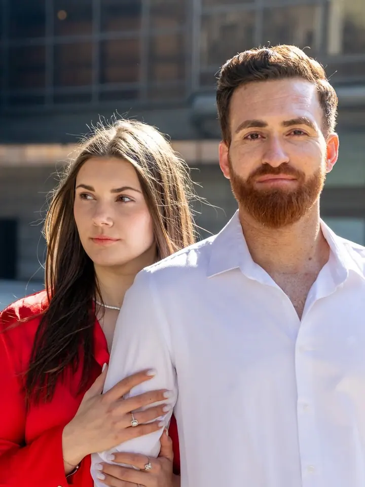
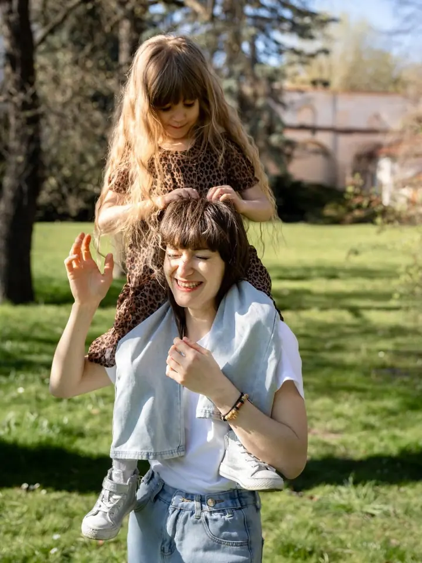
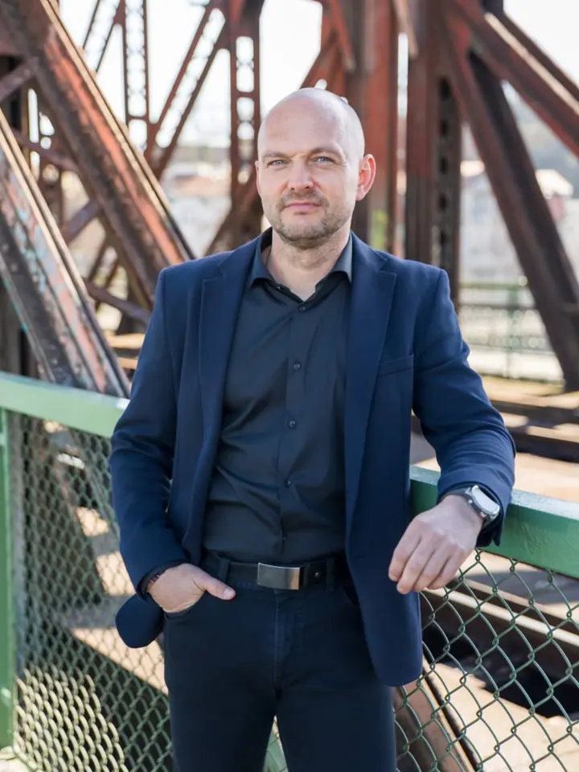
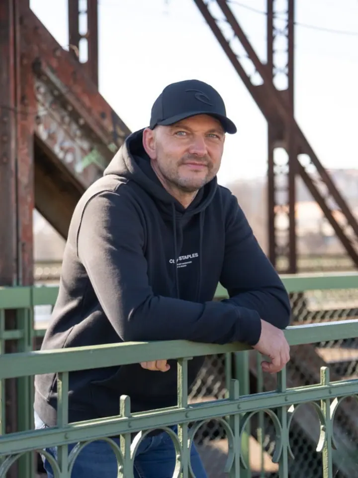
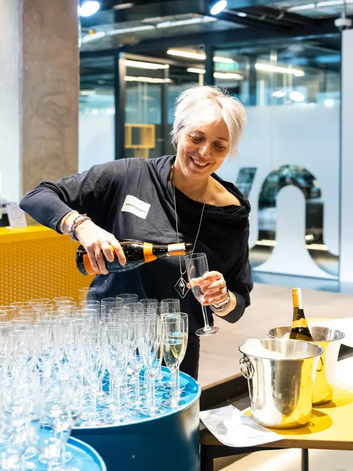
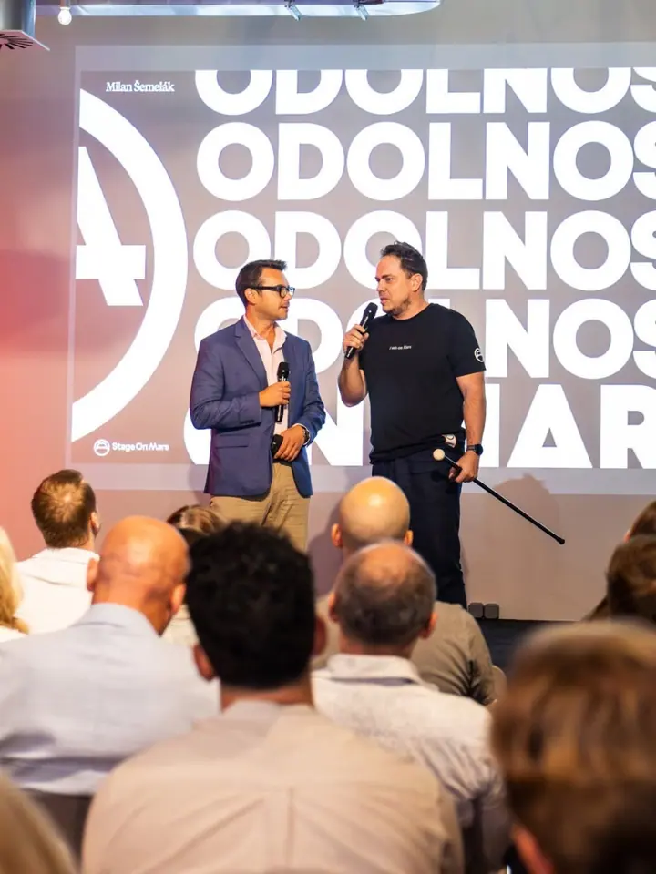
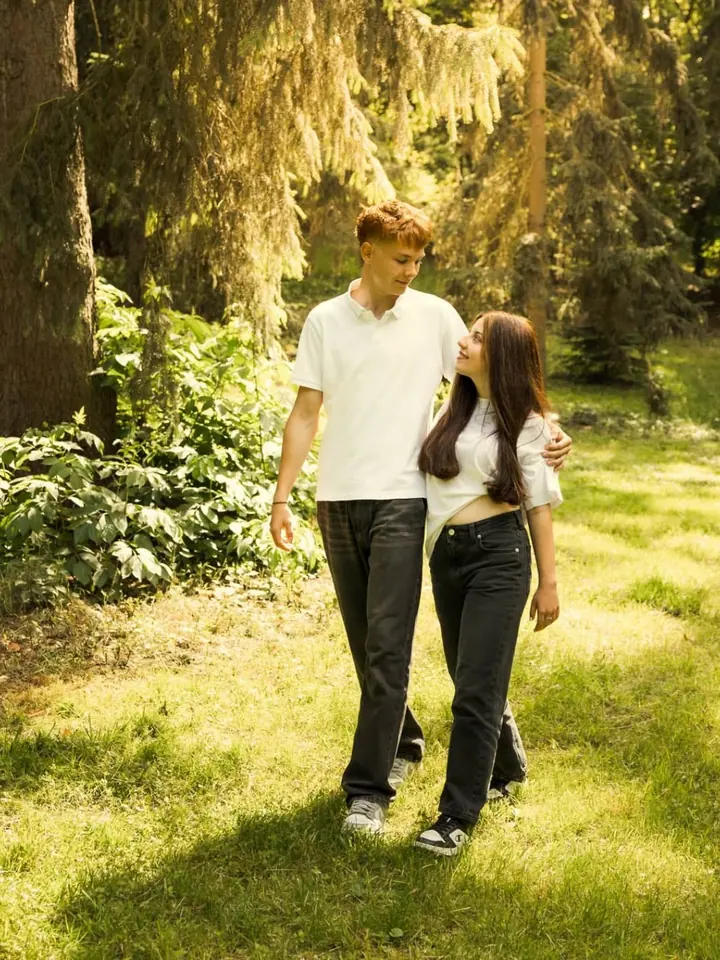
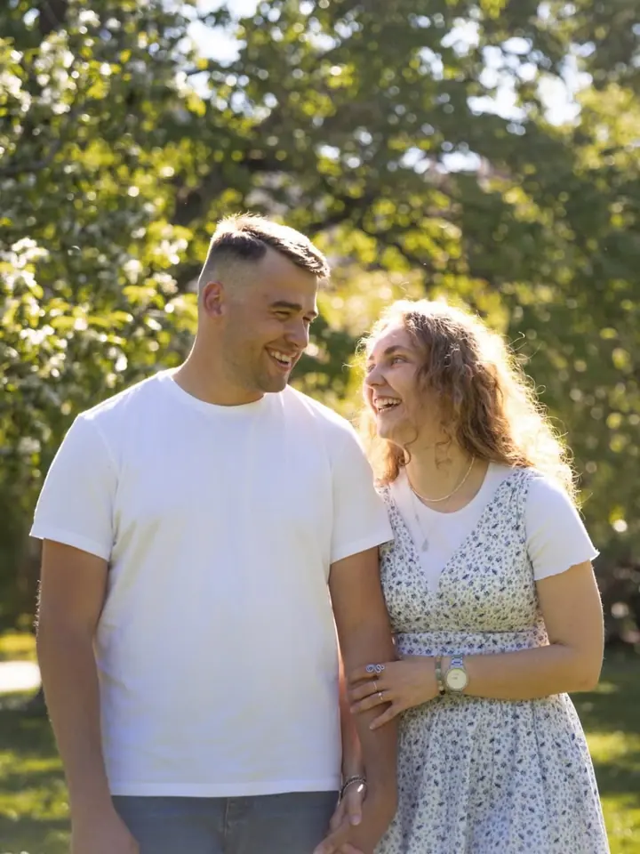
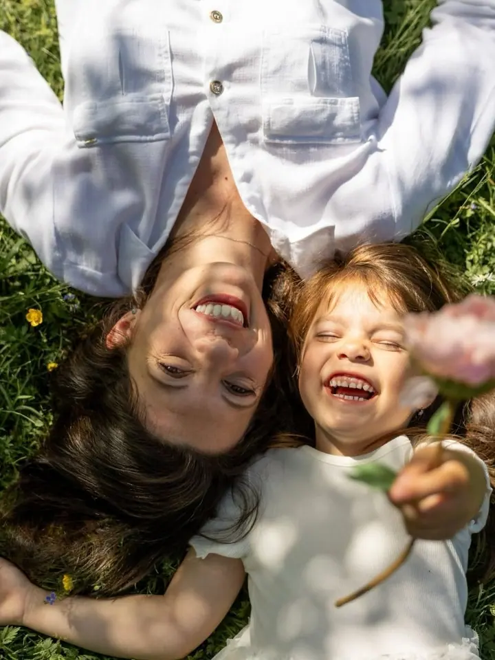

01 / 04
Osobní portréty
Portréty, které vás opravdu vystihnou. Přirozeně a bez přetvářky, takoví, jací jste právě teď.
Zeptat se na termín→








Přirozené portréty, které začínají důvěrou
Zeptat se na termín →(01) Ahoj
Jmenuji se Veronika Vajdiaková a jsem portrétní a eventová fotografka z Prahy. Po letech v marketingu jsem vyměnila projekty za příběhy . Než stisknu spoušť, chci vás nejdřív poznat .
1 000lidí sleduje mou práci na Instagramu
159příspěvků s fotkami a příběhy
(02) Co fotím
01 / 04
Portréty, které vás opravdu vystihnou. Přirozeně a bez přetvářky, takoví, jací jste právě teď.
Zeptat se na termín→02 / 04
Firemní večírky, konference, přednášky, veletrhy i festivaly. Pomůžu vám zachytit každý důležitý moment akce.
Zeptat se na termín→03 / 04
Ať slavíte výročí, plánujete zásnuby, nebo si chcete uchovat hezké chvíle ve dvou. Jemné a citlivé fotky, které vám budou dělat radost i za pár let.
Zeptat se na termín→Dále nabízím
Profesionální portrét, fotky při práci, ukázky výroby nebo produktu. Záběry, které přesně vystihnou vaši značku.
↗(04) Postup
Od první zprávy po hotovou galerii.
Krok 1 z 4
Potkáme se osobně nebo online a pošlu vám krátký dotazník. Společně domluvíme místo, styl oblečení a případně líčení a vlasy.
Krok 2 z 4
Během focení vás jemně vedu, aby vznikly přirozené a autentické záběry. Fotíme venku, v ateliéru i u vás doma.
Krok 3 z 4
Vyberu nejlepší snímky, základně je upravím a pošlu vám náhledovou galerii. Vy si podle balíčku vyberete své favority.
Krok 4 z 4
Vybrané fotky finálně upravím a pošlu přes online galerii v plné kvalitě i s ořezy pro sociální sítě.
Abyste si odnesli nejen fotky, ale i hezký zážitek.
(05) Za objektivem
Krásný den přeji, jsem Veronika. Přes 15 let jsem pracovala v online marketingu, vedla jsem týmy, tvořila weby a komunikovala se zákazníky. Pak jsem vyměnila projekty za příběhy a dnes pomáhám lidem vidět na fotkách to nejhezčí, co je v nich.
Fotím osobní, párové, rodinné i firemní portréty a také eventy, firemní akce, přednášky a veletrhy. Ať fotím cokoliv, postarám se, abyste se cítili dobře a odnesli si nejen krásné fotky, ale i hezký zážitek. A protože znám marketing, poradím vám i s tím, jak fotky využít naplno.
Pořádám workshopy a webináře pro začínající podnikatele, fotografy a tvůrce obsahu ve spolupráci s FotoŠkodou a Nicomem. Ve volném čase čtu, nejraději sci-fi a fantasy, a ráda cestuji za novými kulturami a inspirací.
Veronika
Veronika Vajdiaková · Portrétní a eventová fotografka
Fotím v Praze, středních Čechách a okolí Kutné Hory, po domluvě přijedu kamkoliv po ČR. Místo vybíráme podle vašeho stylu: venku, v pronajatém ateliéru, nebo klidně u vás doma či na zahradě.
Podle balíčku většinou od 45 minut do 3 hodin. Upravené fotky obvykle dostanete do 2 až 4 týdnů, když spěcháte, dá se domluvit i expresní termín.
Ano, přijímám platbu přes Benefit Plus, Edenred a Pluxee.
Osobní portréty začínají na 2 950 Kč, párové a rodinné focení na 3 450 Kč, focení pro podnikání na 3 150 Kč a akce a eventy od 1 800 Kč.
Určitě. Zarezervujte si bezplatnou konzultaci po telefonu nebo online, projdeme spolu vaši představu a domluvíme další postup.
(07) Kontakt
Napište pár vět o tom, co si představujete, a termín, který se vám hodí.
fotkyodveroniky@gmail.com